The global transition toward decentralized energy systems and the massive electrification of the transportation sector have transformed the battery pack from a simple peripheral component into the core strategic asset of the modern energy infrastructure. The production of energy storage packs—whether for residential backup, commercial-and-industrial (C&I) installations, or utility-scale grid stabilization—involves a complex assembly of thousands of individual cells that must operate in perfect synchronization.
As energy storage systems (ESS) scale toward higher capacities and larger-format cells—100Ah, 314Ah, 560Ah, 587Ah, 628Ah, and even 688Ah—the complexity of pack production increases exponentially. With maximum pack configurations reaching 1P104S and weights up to 1000 kg, testing is no longer a quality checkpoint—it is the backbone of safety, performance validation, and lifecycle reliability.
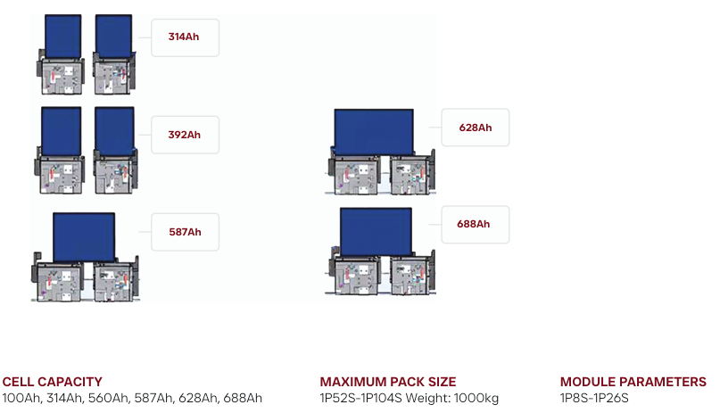
This article provides a detailed overview of the testing equipment required for energy storage pack production, covering cell, module, and pack-level validation for grid-scale and industrial BESS applications.
Energy storage packs, critical for battery energy storage systems (BESS) and electric vehicles (EVs), require rigorous testing during production to ensure safety, performance, and longevity. Specialized equipment validates cells, modules, and full packs against industry standards like those from IEC or UL.
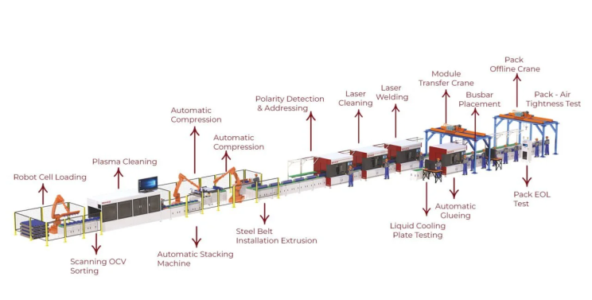
Key Testing Categories
Production testing spans electrical, mechanical, and safety checks, often integrated into end-of-line (EOL) systems.
- Electrical Performance: Battery testers measure voltage, current, capacity, and internal resistance to confirm state-of-charge (SOC) and state-of-health (SOH).
- Charge/Discharge Cycling: Systems simulate real-world cycles, assessing efficiency and degradation under varying loads.
- Insulation and Leakage: High-voltage testers detect faults in insulation, preventing short circuits or breakdowns.
- Thermal Management: Temperature sensors and environmental chambers evaluate heat dissipation during operation.
These occur post-assembly, including after stacking, welding, and busbar installation in automated lines.

Essential Equipment Required
Cell Grading Machine
(5V | 60A–800A | Up to 256 Channels | Temperature Monitoring)
The production journey begins with cell grading — the most critical step in energy storage manufacturing.
Large-format lithium-ion cells used in ESS applications must be carefully matched before assembly. Even small differences in internal resistance, voltage, or capacity can create imbalance in long series strings, leading to thermal instability or reduced cycle life.
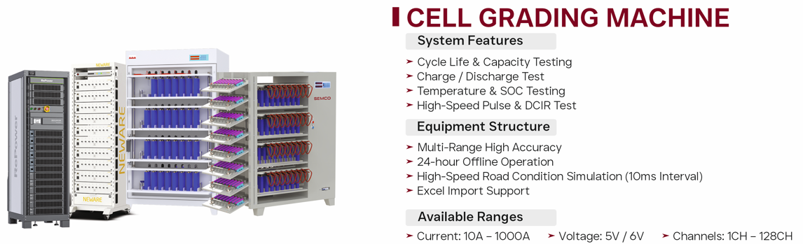
The cell grading machine performs:
- Precise capacity measurement under controlled charge/discharge cycles
- DCIR (Direct Current Internal Resistance) testing
- Open Circuit Voltage (OCV) verification
- Temperature monitoring during cycling
- Data binning and classification
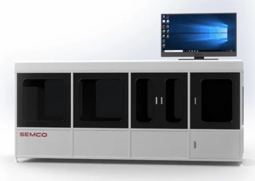
With current capability up to 800A and up to 256 channels, the system supports large-capacity cells (such as 280Ah–688Ah). High-channel architecture enables large-scale production lines to operate efficiently while maintaining strict quality standards.
Temperature sensors integrated into the channels ensure thermal anomalies are detected early during cycling — a crucial factor for high-energy-density cells.
Battery Sorting Machine
(8Ch / 10Ch | Multifunction | Barcode Scanner Integration)
Once cells are graded, they must be sorted into matched groups before module assembly.
The battery sorting machine performs high-accuracy classification based on:
- Resistance values
- Voltage characteristics
- Capacity matching
- Barcode-based traceability
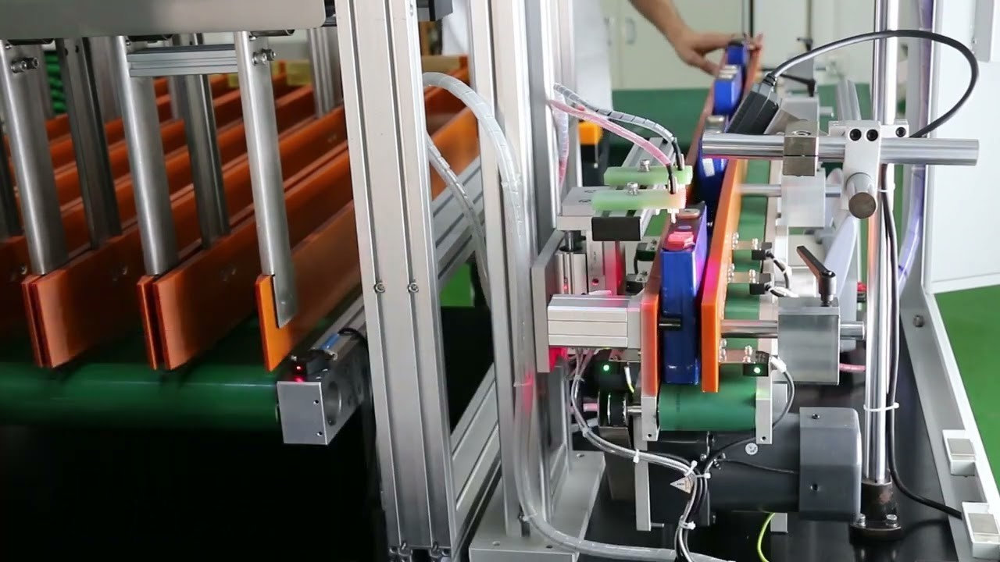
Integration with devices such as the Hioki 3561 ensures precision internal resistance measurement.
Traceability is especially important in energy storage manufacturing. Every cell’s test record is linked via barcode scanning to MES (Manufacturing Execution System), ensuring lifecycle data transparency. This level of digital traceability supports warranty validation and quality audits.
Battery Stacking & Pressing Machine
(Length Compatibility: 180mm–1000mm | Height: 120mm–260mm | Pressure Sensor: 0–1 Ton)
Mechanical stability is fundamental in large battery packs. During assembly, cells must be stacked uniformly and compressed under controlled pressure.
The stacking and pressing machine ensure:
- Uniform compression across prismatic cells
- Accurate alignment of terminals
- Stable structural integration
- Swelling control during operation
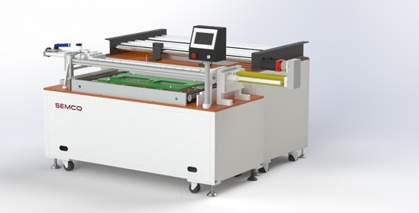
The pressure sensor (0–1T range) provides precise force monitoring. Controlled compression reduces contact resistance between cells and busbars and enhances long-term mechanical integrity.
In large energy storage modules, improper compression can lead to vibration damage, thermal expansion stress, or electrical connection failure. This machine prevents such risks by maintaining controlled assembly conditions.
CCD Polarity Tester Machine
How a CCD Polarity Tester Machine Works
1. Battery Placement
- The battery cell or module is positioned in the testing station.
- This can be done manually or through an automated conveyor system for high-speed manufacturing lines.
2. Image Capture Using CCD Camera
- A high-resolution CCD camera captures detailed images of the battery’s terminals.
- The camera is positioned to get a clear view of polarity indicators, such as symbols, colors, or terminal shapes.

3. Polarity Verification Process
- The captured image is processed using machine vision algorithms.
- The system compares the terminal orientation with predefined polarity templates stored in its database.
- If the polarity matches the expected orientation, the battery is marked as pass.
- If the polarity is incorrect, the system flags the battery as reject.
4. Sorting and Classification
- Pass Batteries: Batteries with the correct polarity move forward in the production process.
- Reject Batteries: Batteries with incorrect polarity are flagged for correction or removal.
- Some systems integrate robotic handling to automatically sort out non-compliant batteries.
Laser Cleaning Machine
(30W / 50W Fiber Laser | CCD Inspection System)
Before welding, surface preparation is essential.
Oxidation layers, dust, or surface contaminants on cell terminals and busbars can compromise weld quality and increase contact resistance. Laser cleaning provides a non-contact, high-precision cleaning solution.
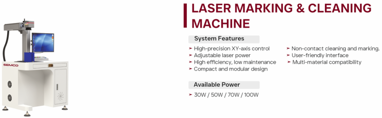
Features include:
- Oxide removal
- Surface activation for welding
- CCD camera inspection for cleaning validation
- Minimal material loss
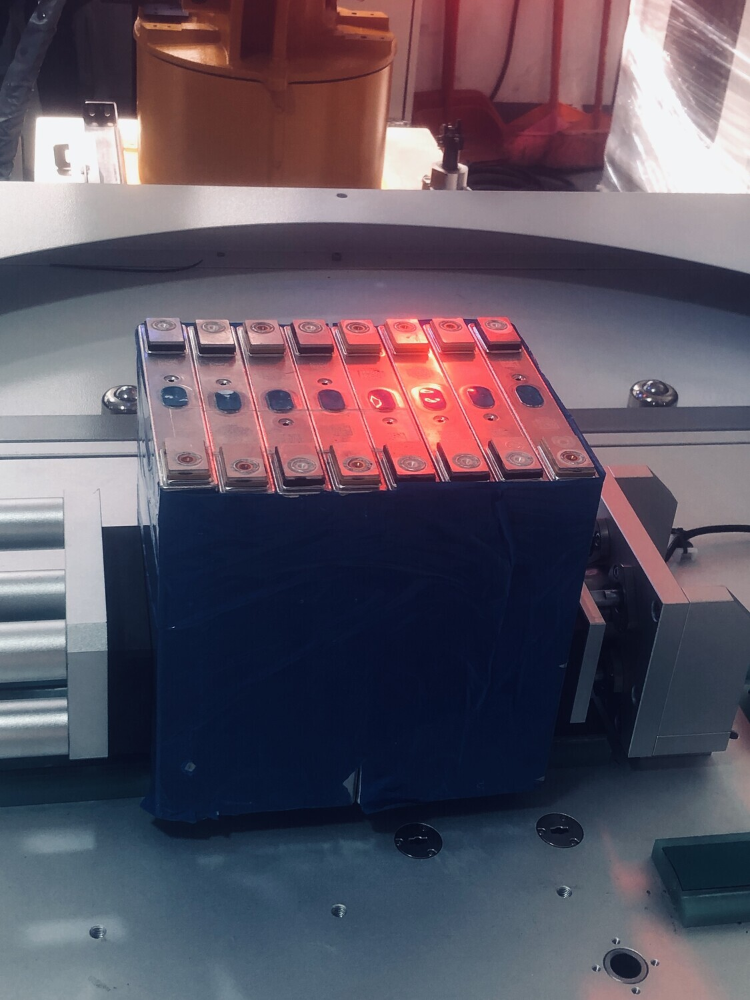
This ensures strong electrical joints and stable current transfer in high-power energy storage packs.
Laser Welding Machine
(1200W / 2000W / 3000W / 6000W | Vision Camera | Open/Closed Cabinet)
Laser welding forms the electrical backbone of the battery pack.
With power options up to 6000W, the system supports thick busbars and high-current interconnections used in ESS applications.
Key functions include:
- Deep penetration welding
- High-strength busbar joining
- Vision-guided weld positioning
- Minimal heat-affected zone
- Controlled weld bead quality

For energy storage systems handling hundreds of amps continuously, low-resistance and mechanically stable welds are essential. Vision systems ensure precision and repeatability, reducing human error and improving consistency.
BMS Tester
(50V / 5A–60A | 400V / 250A–500A)
The Battery Management System (BMS) is the protective intelligence of the pack. Without proper BMS validation, even a well-assembled pack is unsafe.
The BMS tester verifies:
- Voltage sensing accuracy
- Temperature sensor calibration
- Overcurrent protection
- Overvoltage/undervoltage logic
- Communication protocols (CAN, RS485)
- Relay and contactor functionality
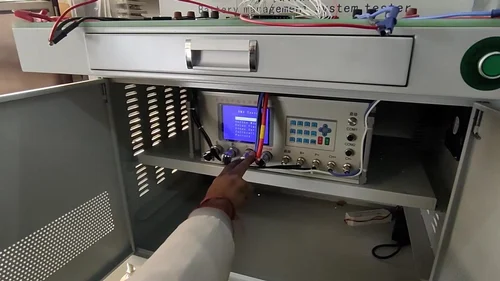
High-voltage testing capability up to 400V and high current testing up to 500A ensures compatibility with energy storage module configurations.
Battery Aging Machine
(12V–2500V | 5A–2500A | 1–48 Channels | RS485 / CAN | Temperature Sensors)
Function: To evaluate core indicators such as battery cycle life, charge/discharge efficiency, and energy density. Application scenarios: performance verification during the R&D phase and random sampling inspection of production batches. Technical features: Supports independent control of multiple channels, current range covers milliampere to kiloampere level and has energy feedback function to reduce energy consumption.
Aging is the final validation stage before dispatch. The battery aging machine simulates real-world operational conditions under controlled environments.
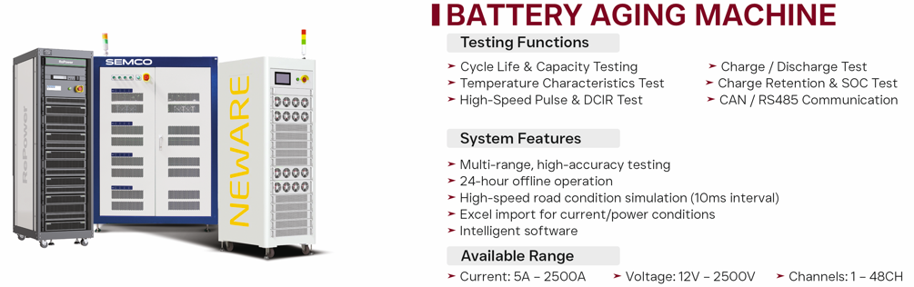
Its capabilities include:
- Long-duration charge/discharge cycles
- High-voltage testing up to 2500V
- High-current validation up to 2500A
- Thermal monitoring during cycling
- Multi-channel scalability for mass production
Aging identifies early failures and ensures pack stability before installation in BESS containers.
In grid-scale systems, where packs may operate continuously for years, aging validation significantly reduces field failure risk.
Pack EOL Test
(50V - 1500V)
EOL testing is the final quality gate before products leave the factory. It typically includes:
- Pack voltage & current performance checks
- Leakage and insulation resistance tests
- Pack communications with Battery Management System (BMS)
- Safety interlock evaluation
These checks confirm that each energy storage pack complies with electrical safety norms and functional performance expectations.
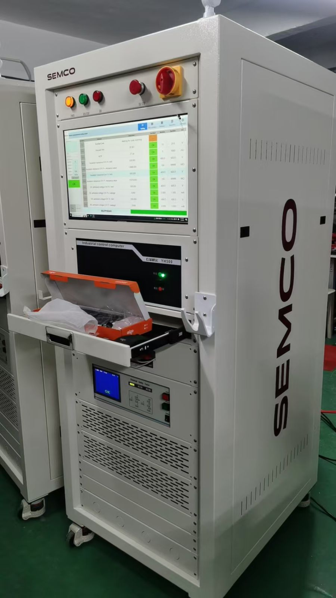
EOL (End-of-Line) Testing Machine Function: Perform comprehensive testing on the finished pack, including parameters such as voltage, current, internal resistance, temperature, and cycle life. Application scenario: Final inspection before PACK is taken offline. Technical features: It integrates high-precision sensors and intelligent data analysis modules, which can automatically generate test reports and determine whether the test is qualified or not.
The system performs both AC and DC withstand voltage tests (up to 6 kV DC), along with precise leakage current detection—critical for preventing electric shock risks and thermal events in the field.
Prismatic Fully Automatic Assembly Line
- Covers the complete process from cell aging and sorting to module assembly, welding, and EOL testing without manual handling.
- Integrated OCV sorting, polarity detection, CCD vision inspection, IR testing, and withstand voltage testing ensure consistent product quality.
- Optimized for mass production with automatic stacking, compression, and laser welding to support large ESS battery volumes.
- High-power laser welding combined with vision cameras delivers accurate, repeatable weld quality and traceability.
- Modular structure allows easy expansion, format changeover, and integration into existing factory MES and pack lines.
Conclusion
Energy storage pack production demands more than simple assembly — it requires a structured, multi-stage validation ecosystem. From high-current cell grading to high-voltage aging, every stage ensures: Electrical precision, Thermal safety, Mechanical durability, Communication reliability and Lifecycle assurance.
In modern energy storage manufacturing, testing equipment is not just part of the production line — it defines product credibility, safety compliance, and long-term performance in the field. By integrating sophisticated testers into automated manufacturing lines, manufacturers can scale production without sacrificing quality — empowering the next generation of energy storage solutions for grid stability, renewable integration, and electrification at scale.